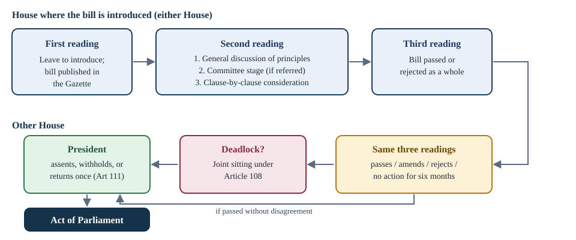

Chapter 6: Parliament and Law-Making¶
The two Houses, their members and officers, how bills become laws, and how Parliament controls money and the executive
Learning outcomes
When you have finished this chapter you should be able to:
- describe the composition of the Rajya Sabha and the Lok Sabha and the rules on allocation of seats;
- state the qualifications and disqualifications of members, including disqualification for defection;
- explain the roles of the Speaker, the Chairman and the other presiding officers;
- distinguish the different kinds of majority used in the Constitution and compute each for a given House;
- trace an ordinary bill through Parliament, and explain when and how a joint sitting is held;
- define a money bill and explain the limited role of the Rajya Sabha over it;
- outline the stages of the budget and the funds of the Government of India;
- describe the main devices and committees by which Parliament controls the executive.
6.1 The composition of Parliament¶
Article 79 says that Parliament consists of the President and two Houses: the Council of States (Rajya Sabha) and the House of the People (Lok Sabha). The President is not a member of either House and does not sit in Parliament, but no bill can become law without the President's assent, so the President is a part of Parliament.
The Rajya Sabha¶
The Rajya Sabha represents the States and Union Territories. Under Article 80 it may have at most 250 members:
- up to 238 representatives of the States and of the Union Territories, and
- 12 members nominated by the President for their special knowledge or practical experience in literature, science, art and social service.
At the time of writing the Rajya Sabha has 245 seats: 233 elected and 12 nominated. Seats are allotted to the States in the Fourth Schedule, broadly according to population, so the States are not equally represented (unlike the United States Senate, where each State has two senators). Only those Union Territories that have legislatures (Delhi, Puducherry, and Jammu and Kashmir) are represented.
The representatives of each State are elected by the elected members of its Legislative Assembly, by proportional representation by means of the single transferable vote. Since 2003, the voting in these elections has been by open ballot for members of political parties, who must show their ballot to their party's authorised agent.
The Rajya Sabha is a permanent body and is never dissolved. Its members serve for six years, and one-third of them retire every second year (Article 83(1)).
The Lok Sabha¶
The Lok Sabha represents the people directly. Under Article 81 it may have at most 550 elected members: not more than 530 from the States and not more than 20 from the Union Territories. Its present strength is 543. Members are directly elected from single-member territorial constituencies by citizens of 18 years and above, under the first-past-the-post system (Chapter 13).
The Lok Sabha's normal term is five years from the date of its first meeting, but it may be dissolved earlier by the President (Article 83(2)). During a national emergency, its term may be extended by a law of Parliament for one year at a time, but not beyond six months after the emergency ends.
Allocation of seats¶
Article 81 requires that seats be allotted to each State so that the ratio between the number of seats and the population of the State is, so far as practicable, the same for all States, and that each State be divided into constituencies with roughly equal populations. After every census, seats are to be readjusted (Article 82).
The number of seats allotted to each State has, however, been frozen on the basis of the 1971 census. The 42nd Amendment (1976) froze it until the 2001 census, and the 84th Amendment (2001) extended the freeze until the first census taken after the year 2026. The purpose was to avoid penalising States that had succeeded in controlling population growth. The boundaries of constituencies within each State were redrawn on the basis of the 2001 census, without changing the number of seats per State.
Reserved seats¶
Seats in the Lok Sabha and the State Legislative Assemblies are reserved for the Scheduled Castes and Scheduled Tribes in proportion to their population (Articles 330 and 332). This reservation was originally for ten years and has been extended repeatedly; the 104th Amendment (2019) extended it until 2030. In a reserved constituency, only a member of the group can stand, but all voters of the constituency vote.
Reservation of seats for women
The 106th Amendment (2023) provides that, as nearly as may be, one-third of the seats in the Lok Sabha, in each State Legislative Assembly and in the Legislative Assembly of Delhi shall be reserved for women, including one-third of the seats already reserved for Scheduled Castes and Scheduled Tribes. The reservation will take effect only after a delimitation exercise carried out on the basis of the first census taken after the Amendment's commencement, and will last for fifteen years (Parliament may extend it). Seats are to rotate after each delimitation. There is no such reservation in the Rajya Sabha or the State Legislative Councils. Check the current position before relying on the date from which it applies.
| Rajya Sabha | Lok Sabha | |
|---|---|---|
| Maximum strength | 250 (238 elected + 12 nominated) | 550 elected |
| Present strength | 245 | 543 |
| Elected by | Elected MLAs, by single transferable vote | The people, by first past the post |
| Minimum age | 30 | 25 |
| Term | Permanent; members serve six years, one-third retire every two years | Five years, unless dissolved earlier |
| Presiding officer | Chairman (the Vice-President) | Speaker (elected by the House) |
Table 6.1. The two Houses compared.
6.2 Members¶
Qualifications and disqualifications¶
To be a member of Parliament, a person must be a citizen of India, make an oath or affirmation before a person authorised by the Election Commission, and be at least 30 years old for the Rajya Sabha or 25 years for the Lok Sabha (Article 84). Further qualifications are laid down by the Representation of the People Act, 1951; for example, the person must be registered as an elector in a parliamentary constituency.
Under Article 102, a person is disqualified from being a member if he or she:
- holds an office of profit under the Government of India or of a State (other than an office exempted by law);
- is of unsound mind, so declared by a court;
- is an undischarged insolvent;
- is not a citizen, or has voluntarily acquired the citizenship of a foreign State;
- is disqualified by any law of Parliament; or
- is disqualified under the Tenth Schedule (defection).
The Representation of the People Act adds grounds such as conviction for certain offences. A member convicted of an offence and sentenced to imprisonment for two years or more is disqualified from the date of conviction; in Lily Thomas v. Union of India (2013), the Supreme Court struck down the provision that had allowed sitting members to stay on while their appeals were pending.
On questions of disqualification under Article 102(1), the President decides, after obtaining the opinion of the Election Commission, and must act according to that opinion (Article 103). Questions of defection are decided by the presiding officer of the House.
Disqualification for defection: the Tenth Schedule¶
Frequent changes of party by legislators in the 1960s and 1970s led to unstable governments. The 52nd Amendment (1985) added the Tenth Schedule, popularly called the anti-defection law. A member is disqualified if:
- a member elected on a party ticket voluntarily gives up membership of that party;
- he or she votes or abstains in the House contrary to the direction (whip) of the party, without its prior permission, and the party does not condone it within fifteen days;
- an independent member joins a political party after the election; or
- a nominated member joins a political party after six months from taking his or her seat.
There is one exception: a merger. A member is not disqualified if his or her original party merges with another party and at least two-thirds of the members of the legislature party agree to the merger. The original Schedule also exempted a "split" by one-third of the legislature party; the 91st Amendment (2003) removed that exception.
The question of disqualification is decided by the Speaker or Chairman. In Kihoto Hollohan v. Zachillhu (1992), the Supreme Court upheld the Tenth Schedule but held that the presiding officer acts as a tribunal, and that his or her decision is subject to judicial review. The Court has also said that such petitions should ordinarily be decided within three months.
Worked example 6.1: Is it defection?
Situation. Party P has 30 members in the Lok Sabha. (a) Member A votes against the party's whip on a bill without permission, and the party expels him the next week. (b) Twenty-one members of Party P announce that Party P is merging with Party Q, and the remaining nine refuse to go along.
Answer. (a) A has voted contrary to the whip without prior permission. Unless the party condones the vote within fifteen days (which it clearly has not), A is liable to be disqualified on a petition to the Speaker. Expulsion from the party is a separate matter and does not by itself cause disqualification. (b) Two-thirds of 30 is 20. Twenty-one members agree to the merger, which is more than two-thirds, so the merger exception applies (assuming the original party has merged), and the twenty-one are not disqualified. The nine who decline the merger and choose to function as a separate group are also protected by the same paragraph of the Schedule.
Vacation of seats¶
A member's seat becomes vacant if he or she is elected to both Houses (and must choose one), is elected to Parliament and a State legislature (and does not resign the State seat within the prescribed time), resigns and the resignation is accepted, becomes disqualified, or is absent from all meetings of the House for sixty days without permission (Article 101).
6.3 Presiding officers¶
The Speaker¶
The Speaker of the Lok Sabha is elected by the members from among themselves, usually at the first sitting after a general election (Article 93). The Deputy Speaker is elected in the same way. Until the Speaker is elected, a Speaker pro tem, usually one of the senior-most members, is appointed by the President to administer the oath to new members and preside over the election.
The Speaker's powers are considerable:
- maintaining order and decorum in the House, interpreting its rules, and adjourning or suspending the sitting if there is no quorum;
- deciding whether a bill is a money bill, and that decision is final (Article 110(3));
- presiding over a joint sitting of the two Houses (Article 118(4));
- deciding questions of disqualification for defection under the Tenth Schedule;
- appointing the chairmen of the committees of the Lok Sabha and supervising their work.
The Speaker does not vote in the first instance, but has a casting vote in the event of a tie (Article 100). The Speaker does not vacate office when the Lok Sabha is dissolved, but continues until immediately before the first meeting of the new House. The Speaker can be removed by a resolution passed by a majority of all the then members of the Lok Sabha, after fourteen days' notice (Article 94). While such a resolution is under consideration, the Speaker cannot preside but may speak and vote in the first instance.
The Chairman of the Rajya Sabha¶
The Vice-President is the ex officio Chairman of the Rajya Sabha, and the House elects a Deputy Chairman from among its members. The Chairman's powers in the Rajya Sabha are similar to the Speaker's in the Lok Sabha, except that the Chairman does not certify money bills or preside over joint sittings. Since the Chairman is not a member of the Rajya Sabha, he or she has only a casting vote.
The Leader of the Opposition¶
The office of Leader of the Opposition in each House is recognised by a law of 1977, which defines it as the leader of the largest party in opposition to the government, recognised as such by the Speaker or Chairman. In practice, recognition has been linked to the party having at least one-tenth of the seats in the House. The Leader of the Opposition sits on several selection committees, for example for the Central Vigilance Commissioner and the Election Commissioners.
6.4 Sessions and majorities¶
Sessions¶
The President summons each House to meet, but the gap between two sessions cannot exceed six months (Article 85), so Parliament must meet at least twice a year. In practice there are three sessions: the Budget session (roughly February to May), the Monsoon session (July to September) and the Winter session (November to December).
| Term | Who does it | Effect |
|---|---|---|
| Adjournment | Presiding officer | Ends a sitting for a stated time (hours, days or weeks) |
| Adjournment sine die | Presiding officer | Ends a sitting without fixing a day for the next |
| Prorogation | President | Ends a session; pending bills do not lapse |
| Dissolution | President (Lok Sabha only) | Ends the life of the Lok Sabha; a general election follows |
Table 6.2. Ending a sitting, a session or a House.
On dissolution of the Lok Sabha, some pending bills lapse. A bill pending in the Lok Sabha, or passed by the Lok Sabha and pending in the Rajya Sabha, lapses. A bill pending in the Rajya Sabha that has not been passed by the Lok Sabha does not lapse (the Rajya Sabha is never dissolved). Nor do bills awaiting the President's assent, bills returned by the President for reconsideration, or bills for which a joint sitting has been notified before dissolution.
The quorum for a sitting of either House is one-tenth of its total number of members, including the presiding officer (Article 100(3)).
Kinds of majority¶
The Constitution uses several kinds of majority, and confusing them is one of the commonest mistakes in examinations.
| Majority | Meaning | Examples |
|---|---|---|
| Simple | More than half of the members present and voting | Ordinary bills, money bills, no-confidence motions, approval of President's rule (Article 356) |
| Absolute | More than half of the total membership of the House (including vacant seats) | Used as part of the special majority below |
| Effective | More than half of the then members of the House (total membership minus vacancies) | Removal of the Speaker and Deputy Speaker (Article 94); removal of the Vice-President in the Rajya Sabha (Article 67) |
| Special (Article 249) | Two-thirds of the members present and voting | Rajya Sabha resolution allowing Parliament to legislate on a State List subject (Article 249); creating an All-India Service (Article 312) |
| Special (Article 368) | A majority of the total membership and two-thirds of those present and voting | Constitutional amendments; removal of judges; approval of a national emergency (Article 352) |
| Two-thirds of total membership | Two-thirds of the total membership of the House | Impeachment of the President (Article 61) |
Table 6.3. Kinds of majority.
Worked example 6.2: Counting majorities
Situation. The Lok Sabha has a total membership of 543. Three seats are vacant. On a particular day, 500 members are present and voting. What is needed for (a) a simple majority, (b) an effective majority, (c) an absolute majority, and (d) the special majority of Article 368?
Answer.
- Simple majority: more than half of 500, that is 251 votes.
- Effective majority: more than half of the then members, \(543 - 3 = 540\); half of 540 is 270, so 271 votes.
- Absolute majority: more than half of 543; half is 271.5, so 272 votes.
- Article 368 special majority: both (i) a majority of the total membership, 272, and (ii) two-thirds of those present and voting, \(\tfrac{2}{3} \times 500 = 333.3\), so at least 334. Both conditions must be met; here the second is the binding one, so 334 votes in favour are needed.
6.5 How an ordinary bill becomes law¶
A bill is a proposal for a law. A bill introduced by a minister is a government bill; one introduced by any other member is a private member's bill. There are four kinds of bill under the Constitution: ordinary bills, money bills, financial bills and constitutional amendment bills. This section describes ordinary bills; money and financial bills follow in section 6.6, and amendment bills in Chapter 11.
An ordinary bill can be introduced in either House. It passes through three readings in each House, as shown in Figure 6.1.

- First reading. The member asks for leave to introduce the bill; once leave is granted, the bill is introduced and published in the Gazette of India. There is usually no discussion at this stage.
- Second reading. This is the most important stage.
- General discussion. The House discusses the principles of the bill and decides whether to take it into consideration at once, refer it to a select committee of the House or a joint committee of both Houses, or circulate it to elicit public opinion. Many bills are referred to a departmentally related standing committee.
- Committee stage. The committee examines the bill clause by clause, hears experts and interested groups, and reports back, often with amendments.
- Consideration stage. The House considers the bill clause by clause; members may move amendments, and each clause is voted on.
- Third reading. The House accepts or rejects the bill as a whole. No amendments of substance are allowed.
The bill then goes to the other House, which goes through the same three readings. The other House may pass the bill as it is, pass it with amendments (which return to the first House), reject it, or keep it without action.
When both Houses have agreed to the bill in the same form, it is presented to the President for assent (Article 111). Once the President assents, the bill becomes an Act.
Deadlock and the joint sitting¶
What happens if the Houses cannot agree? Under Article 108, the President may summon a joint sitting of the two Houses if, after a bill has been passed by one House and sent to the other:
- the other House rejects the bill;
- the Houses disagree on amendments to the bill; or
- more than six months pass from the date of receipt without the other House passing the bill.
The Speaker presides over the joint sitting (or, in the Speaker's absence, the Deputy Speaker, and then the Deputy Chairman of the Rajya Sabha). The bill is passed if it is agreed to by a majority of the total number of members of both Houses present and voting. No new amendments may be proposed, except those made necessary by the delay or those on which the Houses disagreed.
A joint sitting cannot be held for a money bill (the Lok Sabha prevails anyway) or a constitutional amendment bill (each House must pass it separately by special majority). Because the Lok Sabha has more than twice as many members as the Rajya Sabha, the view of the Lok Sabha usually prevails in a joint sitting, but not always: much depends on party strengths in each House.
Joint sittings have been held only three times: on the Dowry Prohibition Bill (1961), the Banking Service Commission (Repeal) Bill (1978) and the Prevention of Terrorism Bill (2002).
Key idea
For ordinary bills, the two Houses have equal powers, and a deadlock is resolved by a joint sitting under Article 108, decided by a majority of members present and voting. For money bills, the Lok Sabha prevails. For constitutional amendments, there is no joint sitting: each House must agree separately.
6.6 Money bills and financial bills¶
Money bills¶
A money bill (Article 110) is a bill that contains only provisions dealing with all or any of the following: the imposition, abolition, remission, alteration or regulation of any tax; the borrowing of money by the Government of India; the custody of, and payments into or withdrawals from, the Consolidated Fund or the Contingency Fund of India; the appropriation of money out of the Consolidated Fund; declaring any expenditure to be charged on the Consolidated Fund; the receipt of money on account of the Consolidated Fund or the Public Account; and any matter incidental to these. A bill is not a money bill merely because it provides for fines, fees for licences or services, or taxes levied by local authorities.
The procedure for money bills (Article 109) gives the Lok Sabha the upper hand.
- A money bill can be introduced only in the Lok Sabha, and only on the recommendation of the President.
- After the Lok Sabha passes it, it goes to the Rajya Sabha, which must return it within 14 days, with or without recommendations.
- The Lok Sabha may accept or reject any or all of the Rajya Sabha's recommendations. Either way, the bill is deemed passed by both Houses. If the Rajya Sabha does not return it within 14 days, it is deemed passed in the form passed by the Lok Sabha.
- The Speaker's certificate that a bill is a money bill is final.
- The President may give or withhold assent but cannot return a money bill for reconsideration.
The Speaker's certificate under review
The finality of the Speaker's certificate has been tested in court. In K. S. Puttaswamy v. Union of India (2018, the Aadhaar case), the majority upheld the certification of the Aadhaar Act as a money bill, while a dissenting judge held that it was not one. In Rojer Mathew v. South Indian Bank (2019), a five-judge bench doubted the reasoning and referred the question of what makes a money bill to a larger bench. Check the current position.
Financial bills¶
A financial bill is a bill that deals with fiscal matters but does not meet the strict definition of a money bill. There are two kinds (Article 117).
- Financial bills of the first kind contain some money-bill matters together with other matters. Like money bills, they can be introduced only in the Lok Sabha on the President's recommendation; after that they are treated like ordinary bills, so the Rajya Sabha can amend or reject them and a joint sitting is possible.
- Financial bills of the second kind involve expenditure from the Consolidated Fund but contain no money-bill matters. They can be introduced in either House without recommendation, but neither House may pass them unless the President has recommended their consideration.
Every money bill is a financial bill, not every financial bill is a money bill
"Financial bill" is the wider category. A money bill is a financial bill that contains only the matters listed in Article 110. Only money bills carry the Speaker's certificate and the 14-day limit on the Rajya Sabha.
6.7 The budget and financial control¶
A basic principle of parliamentary government is that the executive can neither raise taxes nor spend public money without the authority of the legislature. Article 265 says that no tax shall be levied or collected except by authority of law, and Article 266 requires that money be withdrawn from the Consolidated Fund only by law.
The funds of the Government of India¶
- The Consolidated Fund of India (Article 266(1)). All revenues received by the government, all loans it raises and all money it receives in repayment of loans go into this fund. All legitimate expenditure is made from it, under appropriation by Parliament.
- The Public Account of India (Article 266(2)). Other public money received by or on behalf of the government, such as provident fund deposits and savings bank deposits, which the government holds as a banker, is credited here. Payments from it do not need parliamentary appropriation.
- The Contingency Fund of India (Article 267). A fund placed at the disposal of the President to meet unforeseen expenditure pending authorisation by Parliament. It is held by the Finance Secretary on the President's behalf, and the amount spent is recouped from the Consolidated Fund after Parliament approves it.
Charged and voted expenditure¶
Some expenditure is charged on the Consolidated Fund: it is not submitted to the vote of Parliament, though it may be discussed. Article 112(3) lists it, including the emoluments of the President; the salaries and allowances of the Chairman and Deputy Chairman of the Rajya Sabha and the Speaker and Deputy Speaker of the Lok Sabha; the salaries, allowances and pensions of the judges of the Supreme Court; the pensions of High Court judges; the salary of the Comptroller and Auditor-General; debt charges; and sums required to satisfy court judgments. Making these items non-votable protects the independence of the offices concerned. All other expenditure is voted.
The stages of the budget¶
The annual financial statement (Article 112), popularly called the budget, sets out the estimated receipts and expenditure of the government for the coming financial year (1 April to 31 March). Since 2017 the railway budget has been merged into it, and it has been presented on 1 February. It passes through six stages.
- Presentation in the Lok Sabha by the Finance Minister, and its laying before the Rajya Sabha.
- General discussion in both Houses, on the budget as a whole.
- Scrutiny by departmental committees, during a recess, of the demands for grants of each ministry.
- Voting on demands for grants in the Lok Sabha only. Members may move cut motions to reduce a demand: a policy cut (reducing the demand to ₹1, to express disapproval of a policy), an economy cut (reducing it by a specified amount) or a token cut (reducing it by ₹100, to ventilate a specific grievance). On the last day allotted, the Speaker puts all remaining demands to the vote together; this is called the guillotine.
- Passing the Appropriation Bill (Article 114), which authorises withdrawal from the Consolidated Fund of the sums voted and charged.
- Passing the Finance Bill, which gives effect to the tax proposals. It is a money bill.
Because these stages take time, the Lok Sabha may pass a vote on account (Article 116), granting money in advance for part of the year, usually two months, until the full budget is passed. Article 115 provides for supplementary, additional and excess grants when the amounts voted turn out to be insufficient.
6.8 How Parliament controls the executive¶
Making laws is only one of Parliament's functions. In a parliamentary system its most important day-to-day function is holding the government to account.
Devices of accountability¶
- Question Hour. The first hour of most sittings is usually given to questions. Starred questions are answered orally, and supplementary questions may follow; unstarred questions are answered in writing; short notice questions deal with urgent matters.
- Zero Hour. An informal period, not mentioned in the rules, that follows Question Hour, during which members raise matters of public importance without prior notice. It is an Indian innovation.
- Calling attention motion. A member calls the attention of a minister to a matter of urgent public importance and seeks a statement. Also an Indian innovation.
- Adjournment motion. Moved in the Lok Sabha to set aside normal business and discuss a definite matter of urgent public importance. It needs the support of 50 members and is regarded as an implied censure of the government.
- No-confidence motion. Moved only in the Lok Sabha, with the support of at least 50 members. If it is adopted, the Council of Ministers must resign. A censure motion, by contrast, must state the grounds, may target a minister or a policy, and does not require resignation.
- Motion of thanks on the President's address at the start of the first session each year. Its defeat would amount to a defeat of the government.
Parliamentary committees¶
Parliament is too large to examine every matter in detail, so much of its work is done by committees. Standing committees are permanent; ad hoc committees are set up for a particular purpose and dissolved when it is done.
| Committee | Members | Function |
|---|---|---|
| Public Accounts Committee | 22 (15 Lok Sabha, 7 Rajya Sabha) | Examines the accounts of the government and the audit reports of the CAG; by convention since 1967, its chairman is from the opposition |
| Estimates Committee | 30 (all Lok Sabha) | Examines the budget estimates and suggests economies in public expenditure |
| Committee on Public Undertakings | 22 (15 Lok Sabha, 7 Rajya Sabha) | Examines the reports and accounts of public sector undertakings |
| Departmentally related standing committees | 24 committees, each of 31 members (21 Lok Sabha, 10 Rajya Sabha) | Examine the demands for grants, bills, annual reports and policies of the ministries assigned to them; set up in 1993 |
| Joint parliamentary committees and select committees | As constituted | Ad hoc committees to examine a particular bill or matter |
Table 6.4. Some important parliamentary committees.
Worked example 6.3: Following a rupee
Question. Trace how Parliament controls a sum of money spent by a ministry, from the budget to the audit.
Answer. (1) The ministry's demand for grants is included in the annual financial statement and examined by the departmentally related standing committee. (2) The Lok Sabha votes the demand, perhaps after cut motions. (3) The Appropriation Act authorises withdrawal of the money from the Consolidated Fund. (4) The ministry spends it during the year. (5) The Comptroller and Auditor-General audits the accounts and reports to the President, who causes the report to be laid before Parliament (Article 151). (6) The Public Accounts Committee examines the CAG's report and reports to the House, recommending action on irregularities. Control is thus exercised both before spending (by voting) and after it (by audit and committee scrutiny).
6.9 The Rajya Sabha's special powers and parliamentary privileges¶
Special powers of the Rajya Sabha¶
The Rajya Sabha is weaker than the Lok Sabha in financial matters and in its control over the Council of Ministers. But as the House of the States, it has two powers of its own.
- Article 249. If the Rajya Sabha declares by a resolution supported by two-thirds of the members present and voting that it is necessary in the national interest, Parliament may make laws on a subject in the State List. The resolution remains in force for up to one year and can be renewed.
- Article 312. By a similar resolution, the Rajya Sabha can authorise Parliament to create new All-India Services common to the Union and the States.
In addition, if a proclamation of emergency or of President's rule is issued while the Lok Sabha is dissolved, the Rajya Sabha alone can approve it until the new Lok Sabha meets.
Parliamentary privileges¶
Parliamentary privileges are special rights and immunities enjoyed by the Houses, their committees and their members, without which they could not perform their functions (Article 105). The main ones are:
- freedom of speech in Parliament, subject to the Constitution and the rules of procedure;
- immunity from proceedings in any court for anything said or any vote given in Parliament or its committees;
- immunity for publication of reports and proceedings under the authority of the House;
- freedom from arrest in civil cases during a session and for forty days before and after it (not in criminal cases or preventive detention);
- the power of each House to punish members and outsiders for breach of privilege or contempt of the House.
Parliament has never codified its privileges in a law. In Sita Soren v. Union of India (2024), a seven-judge bench of the Supreme Court held unanimously (in March 2024) that the immunity under Articles 105 and 194 does not protect a legislator who takes a bribe to vote or speak in a particular way, overruling the decision in P. V. Narasimha Rao v. State (1998).
Summary
- Parliament consists of the President, the Rajya Sabha (at most 250 members: 238 elected by State legislators, 12 nominated; a permanent body) and the Lok Sabha (at most 550 elected; at present 543; five-year term).
- Seats per State are frozen on the 1971 census until after the first census following 2026. Seats are reserved for SCs and STs until 2030; one-third of seats will be reserved for women after the next delimitation (106th Amendment).
- Members must be citizens, 25 (Lok Sabha) or 30 (Rajya Sabha) years old, and free of the disqualifications in Article 102 and the Tenth Schedule. The presiding officer decides defection cases, subject to judicial review.
- Different provisions need simple, effective, absolute or special majorities; the Article 368 special majority combines a majority of total membership with two-thirds of those present and voting.
- Ordinary bills pass three readings in each House; deadlocks go to a joint sitting (Article 108). Money bills begin in the Lok Sabha, and the Rajya Sabha can only recommend changes within 14 days.
- The budget passes through presentation, discussion, committee scrutiny, voting on demands (Lok Sabha only), the Appropriation Bill and the Finance Bill. Charged expenditure is not voted.
- Parliament controls the executive through questions, motions, committees (notably the Public Accounts Committee) and, ultimately, the no-confidence motion.
6.10 Exercises¶
Exercise 1
What is the maximum strength of the Rajya Sabha, and how is it made up? Who elects its members from a State?
Answer
250: up to 238 representatives of the States and Union Territories and 12 members nominated by the President. The representatives of a State are elected by the elected members of its Legislative Assembly, by proportional representation by single transferable vote.
Exercise 2
The Rajya Sabha has 245 members, with no vacancies. On a resolution under Article 249, 210 members are present and voting. How many must vote in favour?
Answer
Article 249 requires two-thirds of the members present and voting: \(\tfrac{2}{3} \times 210 = 140\). At least 140 members must vote in favour.
Exercise 3
List the three situations in which a joint sitting of Parliament may be called. Name two kinds of bill for which a joint sitting is not possible.
Answer
After a bill passed by one House is sent to the other: (1) the other House rejects it; (2) the Houses disagree on amendments; (3) more than six months elapse without the other House passing it. A joint sitting is not possible for money bills and constitutional amendment bills.
Exercise 4
Explain what the Rajya Sabha can and cannot do with a money bill.
Answer
It cannot introduce, amend or reject a money bill. It can only discuss it and return it to the Lok Sabha within 14 days with recommendations, which the Lok Sabha may accept or reject. If it does not return the bill within 14 days, the bill is deemed passed by both Houses in the form passed by the Lok Sabha.
Exercise 5
Distinguish charged expenditure from voted expenditure, with two examples of charged expenditure.
Answer
Charged expenditure is charged on the Consolidated Fund of India by the Constitution or by law; it is not put to the vote of Parliament, though it may be discussed. Voted expenditure requires a vote of the Lok Sabha on demands for grants. Examples of charged expenditure: the emoluments of the President; the salaries of Supreme Court judges; the salary of the CAG; the salaries of the Speaker and the Chairman; debt charges.
Exercise 6
The Lok Sabha is dissolved. What happens to (a) a bill passed by the Lok Sabha and pending in the Rajya Sabha, (b) a bill introduced in the Rajya Sabha and pending there, (c) a bill passed by both Houses and awaiting the President's assent?
Answer
(a) It lapses. (b) It does not lapse, because the Rajya Sabha is a permanent body and the bill has not been passed by the Lok Sabha. (c) It does not lapse.
Exercise 7
What is the Tenth Schedule's merger exception, and what change did the 91st Amendment make?
Answer
A member is not disqualified for defection if his or her original party merges with another party and at least two-thirds of the members of the legislature party agree to the merger. The 91st Amendment (2003) deleted the earlier exception for a "split" by one-third of the legislature party, leaving only the merger exception.
6.11 Quiz¶
Check yourself: Parliament
Exercise 1
Who presides over a joint sitting of the two Houses of Parliament?
- The President
- The Vice-President
- The Speaker of the Lok Sabha
- The Prime Minister
Answer
The Speaker of the Lok Sabha
Exercise 2
Within how many days must the Rajya Sabha return a money bill?
- 7
- 14
- 30
- 60
Answer
14
Exercise 3
Who decides finally whether a bill is a money bill?
- The President
- The Finance Minister
- The Speaker
- The Chairman of the Rajya Sabha
Answer
The Speaker
Exercise 4
Which amendment added the Tenth Schedule (anti-defection law)?
- 42nd
- 44th
- 52nd
- 91st
Answer
52nd
Exercise 5
The quorum for a sitting of either House is one-___ of its total membership.
Answer
tenth
Exercise 6
In which House can a no-confidence motion against the Council of Ministers be moved?
- Rajya Sabha only
- Lok Sabha only
- Either House
- A joint sitting
Answer
Lok Sabha only
Exercise 7
Match each committee with its main task.
| A | B |
|---|---|
| Public Accounts Committee | Examines public sector undertakings |
| Estimates Committee | Examine ministries' demands and bills |
| Committee on Public Undertakings | Examines CAG reports |
| Departmental standing committees | Suggests economies in expenditure |
Answer
Public Accounts Committee — Examines CAG reports; Estimates Committee — Suggests economies in expenditure; Committee on Public Undertakings — Examines public sector undertakings; Departmental standing committees — Examine ministries' demands and bills
Exercise 8
Under which article can the Rajya Sabha empower Parliament to legislate on a State List subject?
- Article 108
- Article 249
- Article 312
- Article 356
Answer
Article 249